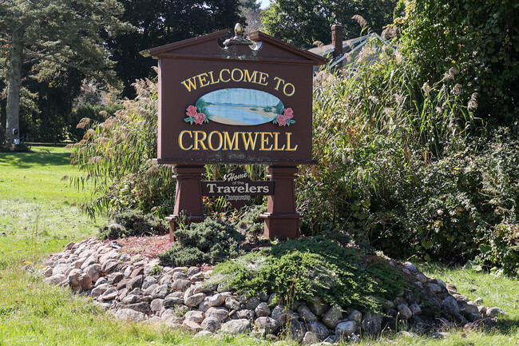
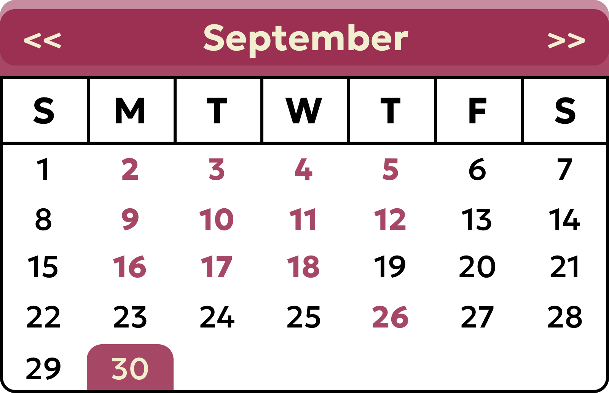

Pierson Park Project
Posted on: September 6, 2024 - 12:32pm
Please be advised that areas of the Pierson Park walking path around the football field are currently closed for construction activities. A new parking lot and team rooms are being constructed to the south of the football field and new paths to connect these areas will be constructed. The area will be reopened as quickly as construction is completed.
Upcoming 2024 Vaccination Clinics: Sep. 25, Oct. 16, Nov. 13 »
2024 EARLY VOTING INFORMATION: OCTOBER 21-31, NOVEMBER 1-3 »
2024 Proposed Zoning Regulations »
*TAX BILL INFO 2024 - CREDIT CARD PAYMENTS ACCEPTED ONLINE ONLY!!* »
General Government FY 2024-2025 Budget »
Household Hazardous Waste Collection 2024 »
Town Plan of Conservation and Development (POCD) »